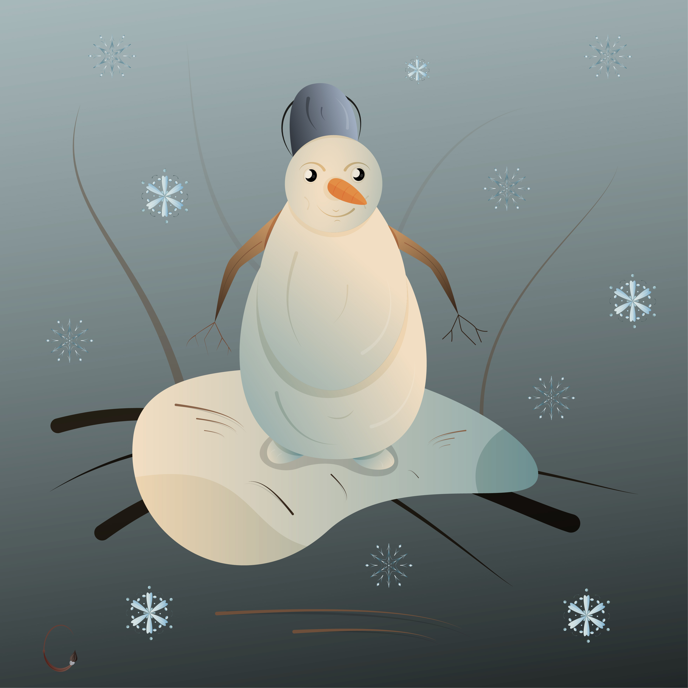
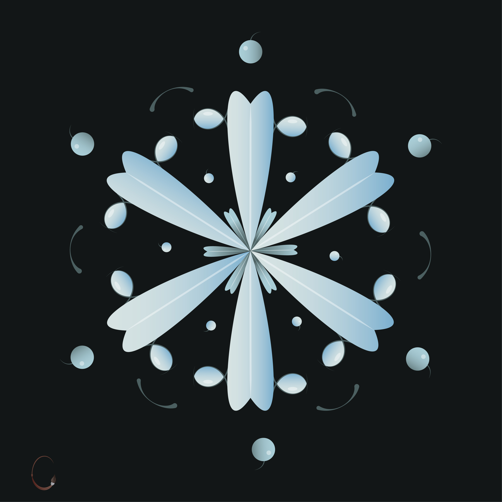
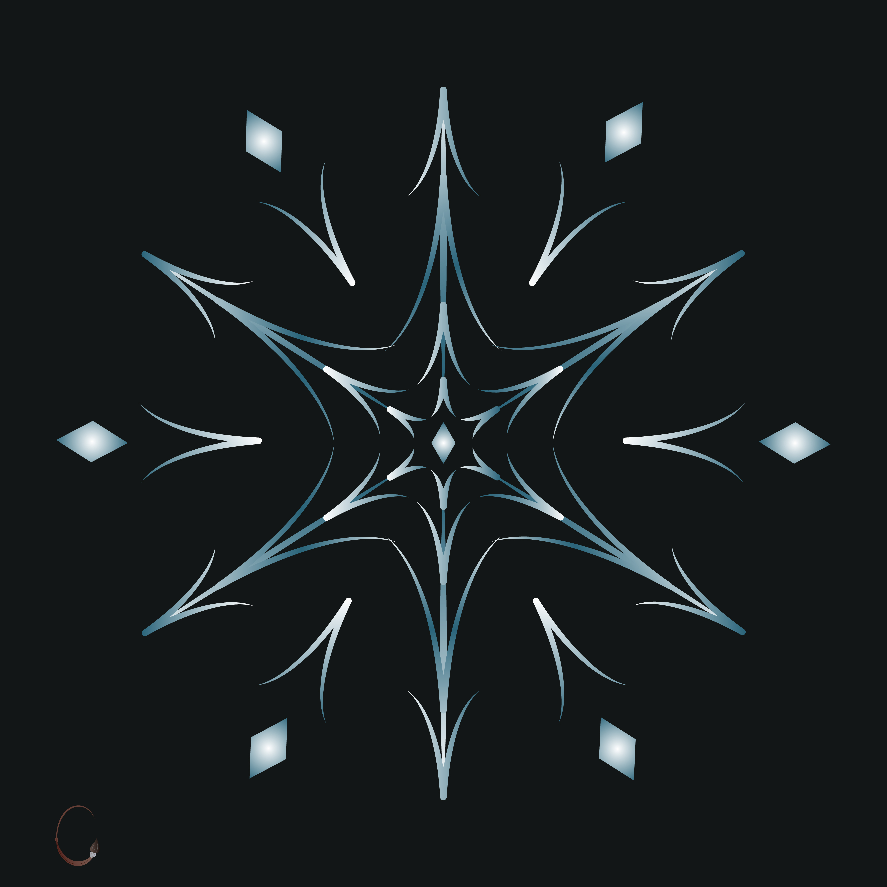

Макроснежинка
Снеговики известны в течение очень долгого времени, хотя первые свидетельства о них относятся к XIV—XV векам. По мнению историков, снеговики появились в доисторические времена, поскольку с самого момента зарождения изобразительного искусства для него использовался любой доступный материал, а снег был доступен и легко обрабатывался.


Снежинка - отдельный снежный или ледяной кристалл, выпадающий из облаков в виде атмосферных осадков с размерами от долей до нескольких миллиметров. Их формирование в атмосфере связано с процессами конденсации и кристаллизации из воздуха водяного пара.

Современная международная классификация форм ледяных кристаллов в атмосфере, принятая в 1949 году, выделяет более 40 основных типов снежинок.
Считается, что первое описание снежинок как кристаллических объектов было дано немецким математиком и астрономом Иоганном Кеплером в 1611 году в трактате «О шестиугольных снежинках».